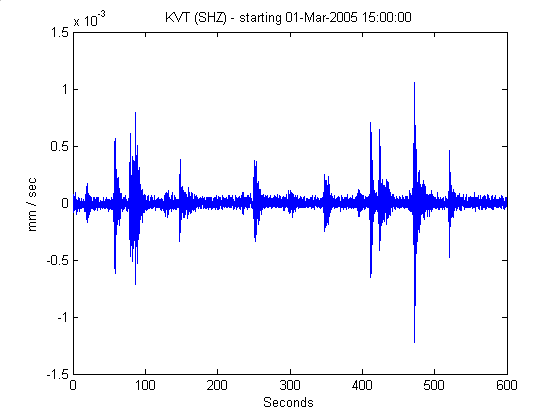
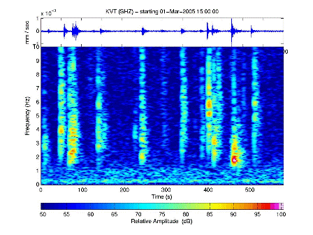
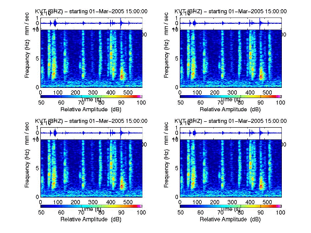

A spectralobject is comprised of some basic spectaral-based routines that allow you to analyze data in the frequency domain. It actually contains only the following information:
- nfft - the number of samples that are in each fourier transform window
- overlap - how many sample values are repeated between each sampling of your spectra
- Frequency maximum - determines the highest frequency that will be graphed.
- dB limits - limits in dB for plotting the spectra. If the color palate is unchanged, then anything less than the min dB will be plotted in blue, and anything over the max dB will be Pink.
Creating a spectralobject
- s = spectralobject(nfft, overlap, freq_max, dBLims)
- creates a spectral object with the specified nfft(fourier transform window), overlap(how many
sample values are repeated between lines of your spectra), the maximum frequency graphed,
and the dB limits.
- s = spectralobject(1024,924, 5, [40 80])
assuming a sample frequency of 100samp/sec, then this creates a spectral object with nfft = 1024 (approx 10 seconds), sampling every second (100 samples), graphing with a maximum frequency of 5 hz and a dB scale between 40 and 80. - s = spectralobject()
creates a default spectralobject. This has nfft = 1024, overlap = nfft * 0.8, freqmax = 8, and a range for dB of 35 to 75
- s = spectralobject(1024,924, 5, [40 80])
Functions of note
- fft
- fast fourier transform
- ifft
- inverse fft
- pwelch
- power spectral density
- setmap
- change the default colormap used with spectrograms
- specgram
- plot the spectrogram of waveforms. If used with multiple waveforms, the resulting spectrograms will be presented in the same shape. That is, if the waveform has 2 rows, then there will be two spectrograms, one above the other. Likewise, if the waveform is 2x4, then there will be 8 plots organized in 2 rows, 4 cols.
- specgram(spectralobject,waveform)
plot a standard spectrogram. The layout of the spectrogram windows depends uponsize(waveform) - specgram(spectralobject,waveform,'xunit',unitname)
Change the units from the default (seconds) to some other unit, such as 'minutes', 'hours', etc...
- specgram(spectralobject,waveform)
- specgram2
- plot the spectrogram of waveforms along with the waveform.
- specgram2(spectralobject,waveform)
plots the spectorgram with the waveform along the top - specgram2(spectralobject,waveform,'axis',gca)
as above, but specify a specific axis.
- specgram2(spectralobject,waveform)
Example
plot(w);plot waveform

s = specgram(1024,924,10,[50 100];create a spectralobject
specgram2(s,w);spectra for waveform

w = repmat(w,2,2);make w a 2x2 waveform
specgram2(s,w);spectra for waveform

Please send feedback to: celso <at> gi <dot> alaska <dot> edu